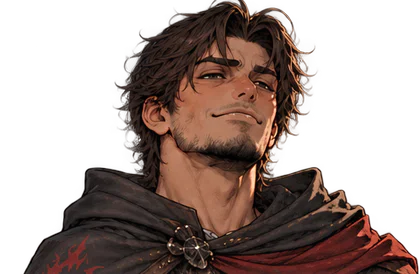
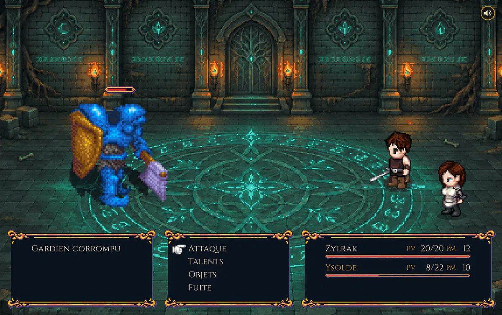
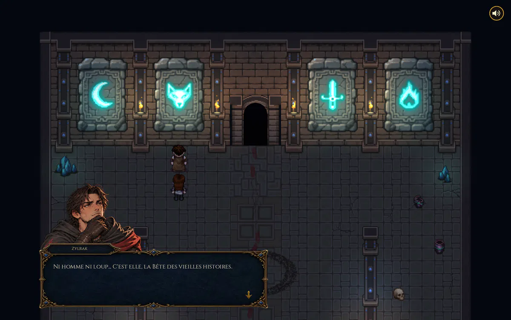
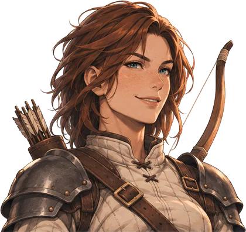

Zylrak
Ashwarden de l'Ordre des Cendres
Un peu trop sûr de lui, il répète son nom à qui veut l'entendre. Il manie l'épée et les Signes, une magie de feu et de cendres.
Un RPG 2D en pixel art
Le Serment des Cendres
Un village aux abois, des goules qui rôdent, des ruines qu'un peuple disparu a scellées. Un RPG à l'ancienne, jouable directement dans ton navigateur, sur ordinateur comme sur téléphone.

Premier chargement d'environ 80 Mo. Sur téléphone, joue en paysage.
Le monde
Depuis des semaines, des goules rôdent autour du village d'Eclatvin. Les routes sont coupées, et le marchand qui devait apporter vivres et remèdes n'est jamais arrivé.
C'est là que débarque Zylrak, un Ashwarden de l'Ordre des Cendres, bien décidé à régler l'affaire. À l'auberge, on parle de cris entendus près des ruines des Yrenn, un peuple disparu dont personne n'a jamais entièrement déchiffré l'écriture.
Dans la forêt, le chariot du marchand gît renversé, couvert de marques de griffes. Les traces mènent vers l'est, jusqu'à un temple taillé dans la montagne, dont la porte est scellée…

Personnages

Ashwarden de l'Ordre des Cendres
Un peu trop sûr de lui, il répète son nom à qui veut l'entendre. Il manie l'épée et les Signes, une magie de feu et de cendres.

Archère, traqueuse de goules
Elle prend d'abord Zylrak pour l'agresseur du marchand. Le quiproquo dissipé, elle fait équipe avec lui : flèches perçantes, pluie de flèches, et des doigts agiles pour chaparder aux monstres.
L'aventure
Parle aux habitants, accepte des contrats au panneau, aide-les… et démasque le voleur d'Eclatvin.
Attaques, Signes, talents et objets. Araignées, goules et gardiens anciens t'attendent hors du village.
Une mini-carte guide tes pas vers l'objectif de chaque quête, de la lisière jusqu'au temple des Yrenn.
Équipe, équipement, inventaire, fragments, journal de quêtes, et trois emplacements de sauvegarde.
Commandes
Les boutons apparaissent sur téléphone et tablette. Tiens l'appareil en paysage.